Project 3
Fun with Flow Models · Parts A and B
Constructing Noisy Training Inputs
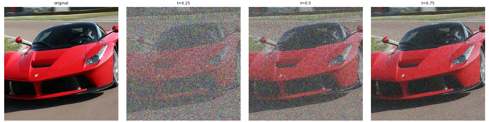
Classical Denoising
t = 0.25
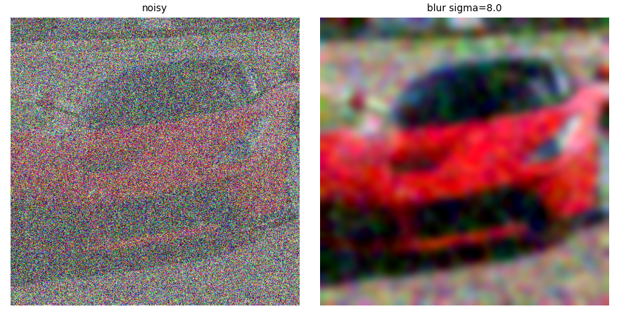
t = 0.50
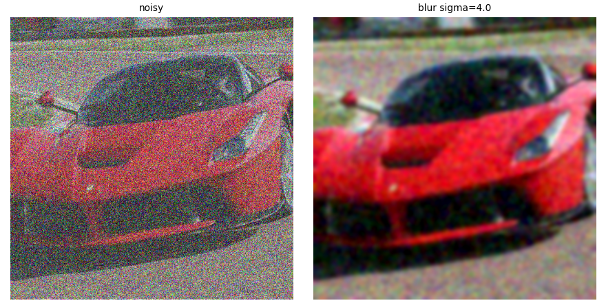
t = 0.75
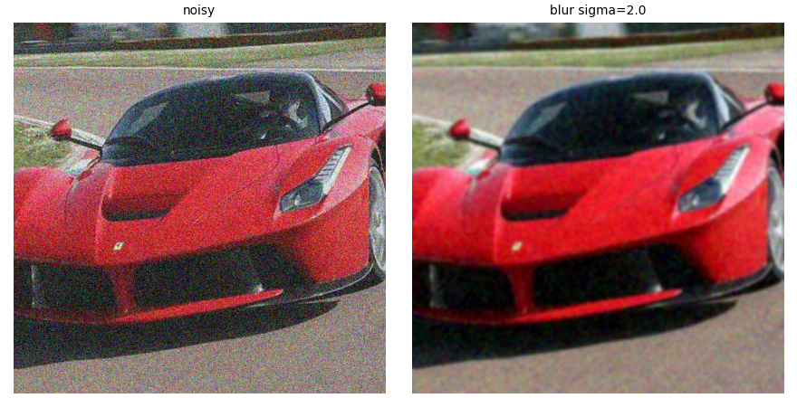
One-Step Denoising
t = 0.25
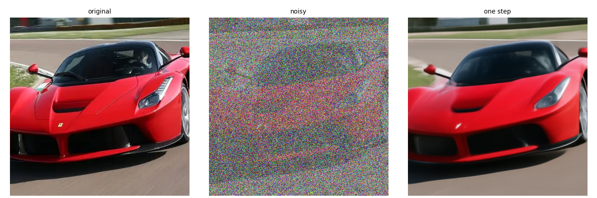
t = 0.50
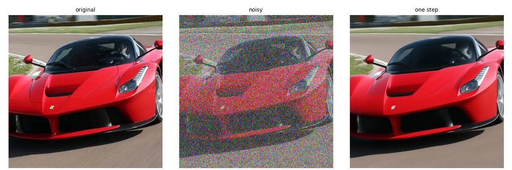
t = 0.75
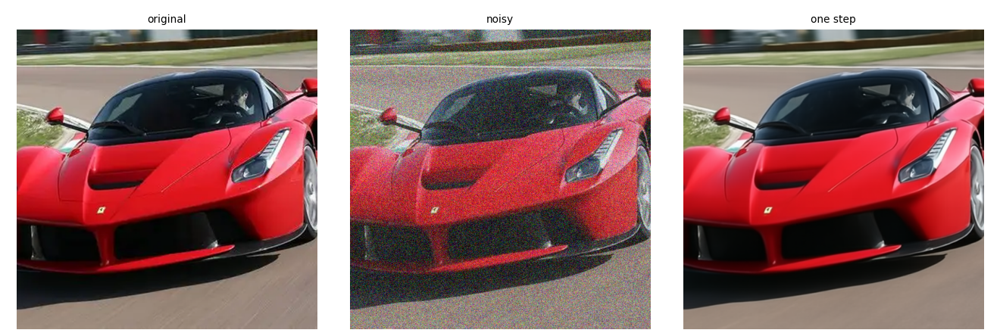
Visualizing Velocity
Original
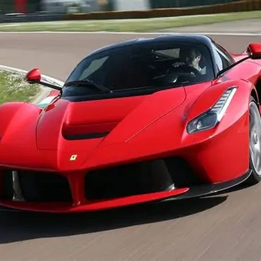
t = 0.25
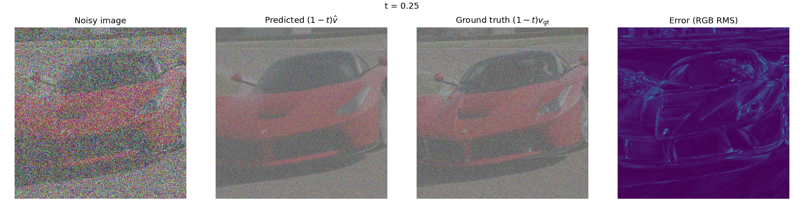
t = 0.50
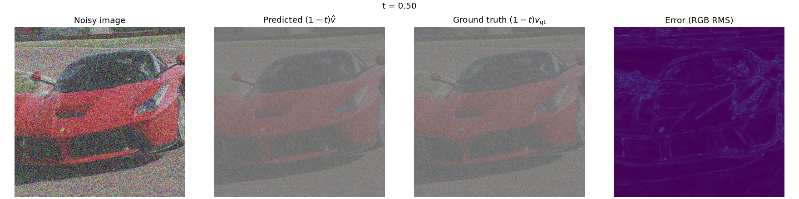
t = 0.75
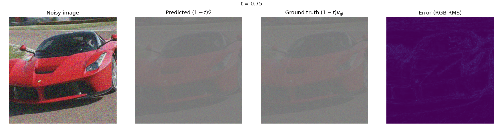
Iterative Denoising with Euler Sampling
From t = 0.50 to t = 1
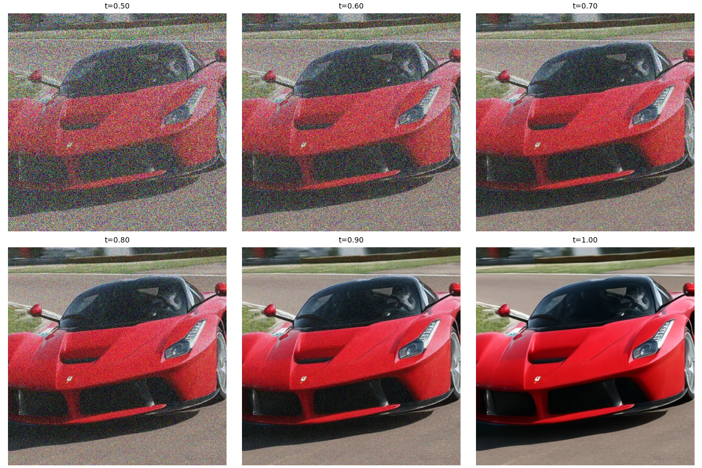
Blur, one step, and Euler
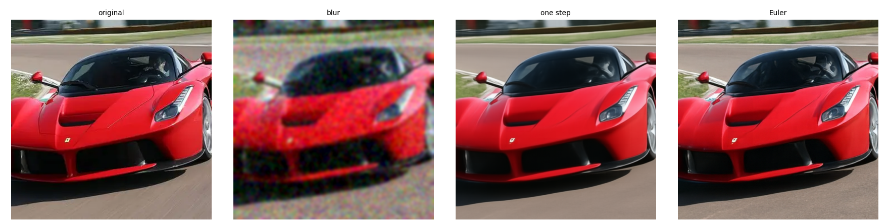
Generating Images from Noise

I started out by generating five images from Gaussian noise using forward Euler integration, starting with prompt “a high quality photo” using stepsizes of h=0.02. Every seed turned into an anthropomorphic representation of people due to the vagueness of my prompt, with lacking guidance resulting in poor definition, especially when t approaches 1. Seed 180 displays melting jaw bones while seed 181 shows neck muscles appearing overly stretched and creased.
Classifier-Free Guidance

To implement guidance I modified my sampling code as per the suggested equation to use vc + w(vc − vu). Here, vc is the velocity derived from the text prompt and vu refers to a null-string prompt. I repeated sampling from Gaussian noise using seeds 180-184 but now added CFG guidance w=7. As expected, the facial features became much tighter compared to previous results, with jaw bone of seed 180 becoming well-defined. The entire series takes form resembling portrait photographs.
Image-to-Image Editing
Campanile

Car
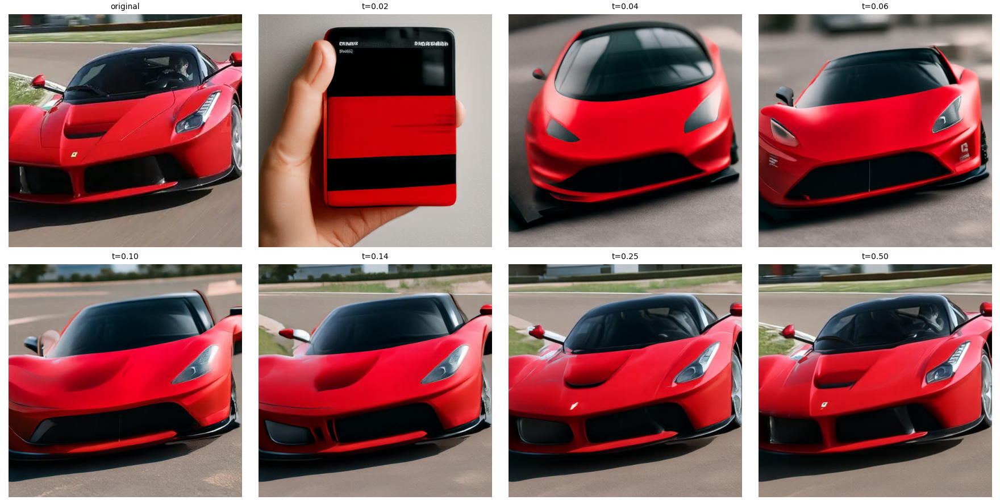
Bicycle
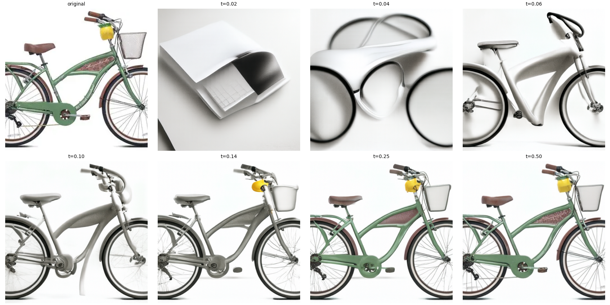
Web image
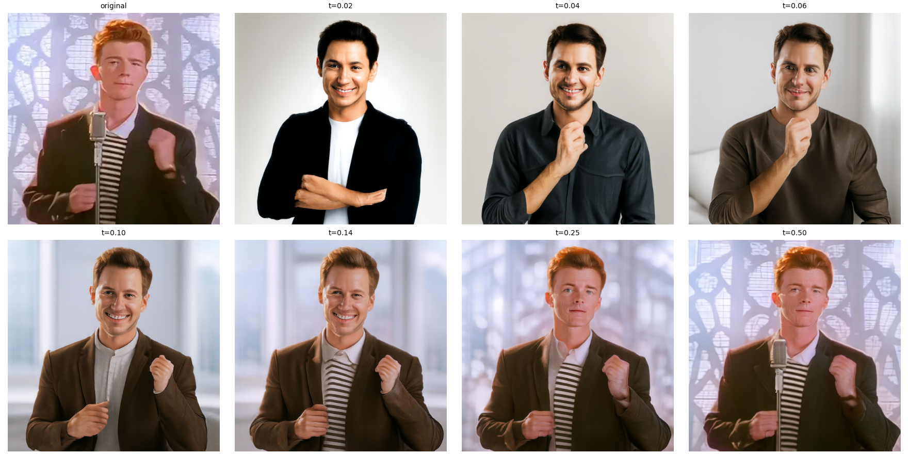
Face drawing
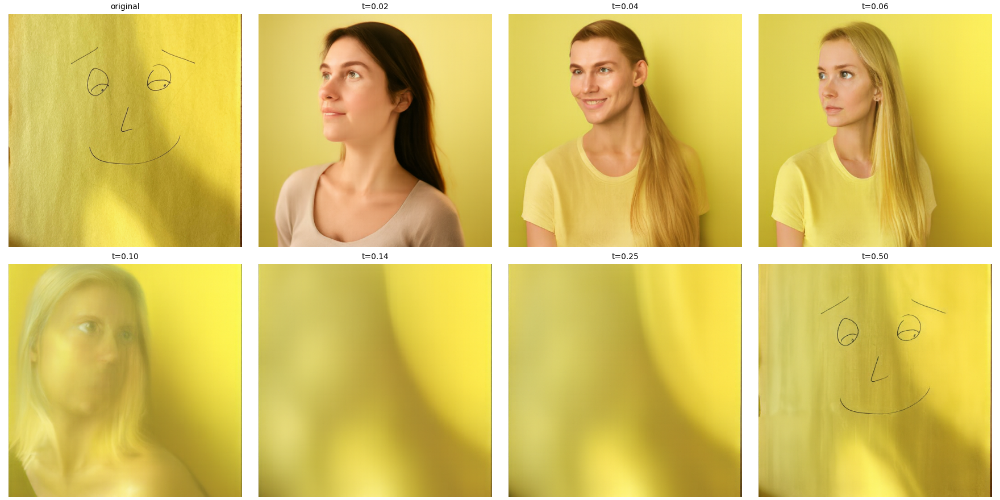
Landscape drawing
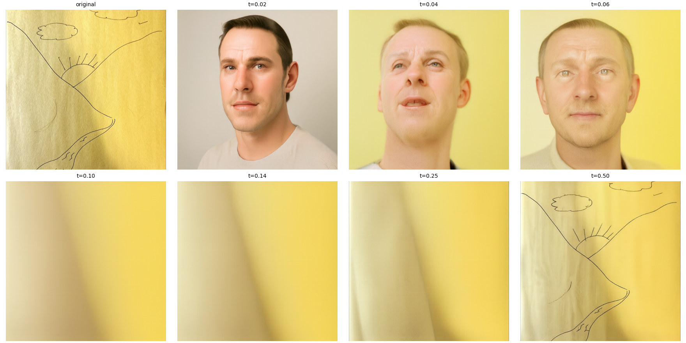
Text-Guided Image Editing
Campanile → Salesforce Tower
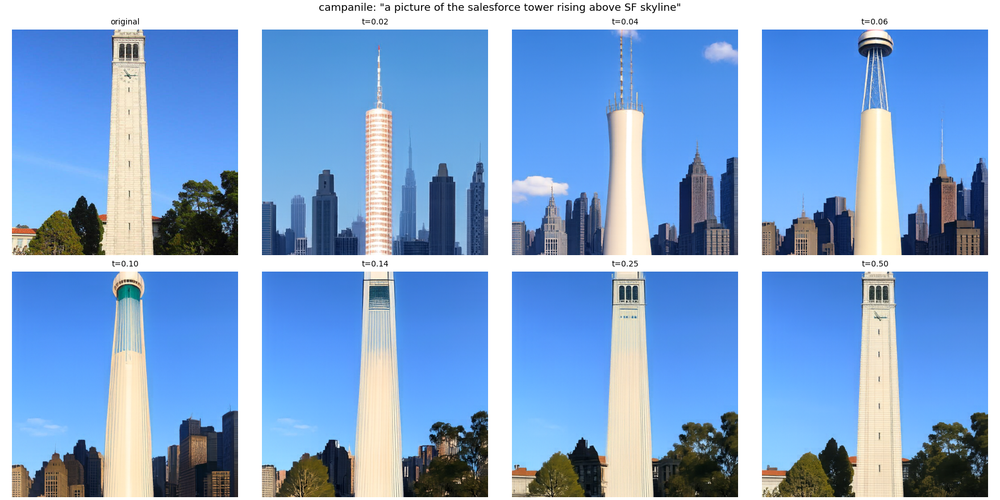
Car → Jack in the Box
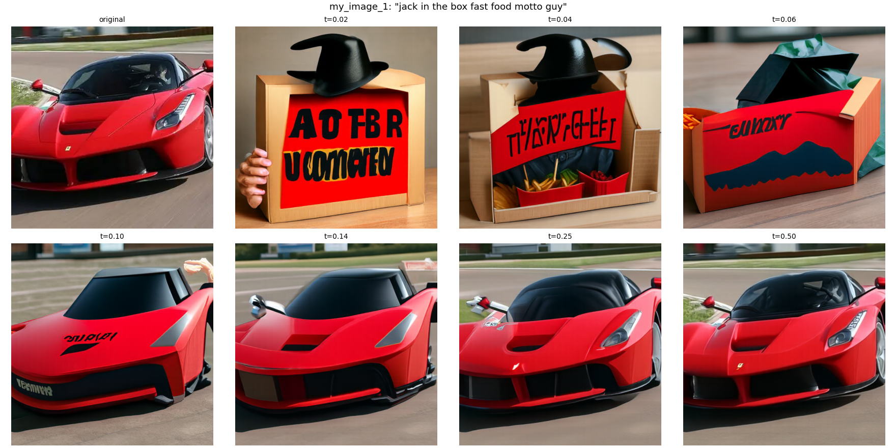
Bicycle → Yosemite
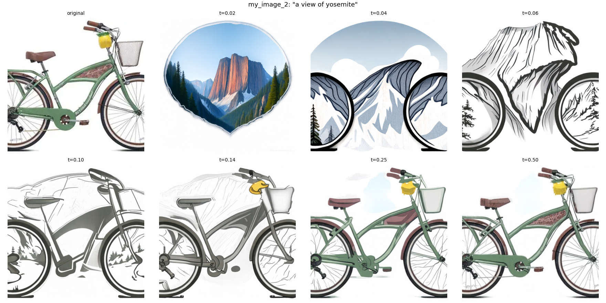
I used the same editing procedure, with a different prompt on each image.
For the Campanile the prompt was “a picture of the salesforce tower rising above SF skyline”. At tstart=0.02 the Campanile was substituted with the Salesforce Tower towering above the ambigious facade of a city. By tstart=0.50 the building returns back to its original state.
For the car the prompt was “jack in the box fast food motto guy”. At tstart=0.02 this resulted in a strange cartoon face with letterings printed on it. The car was reconstructed around tstart=0.25.
For the bicycle the prompt was “a view of yosemite”. At tstart=0.02 the bicycle rims were converted into a mountain landscape. By tstart=0.04 the wheels already had mountain landscape paintings inside, and the image restored itself back to the original picture near tstart=0.50.
Visual Anagrams
Old man / campfire

Village / horse

Hybrid Images
Waterfall up close, skull far away
Full size

64×64
Forest up close, cat far away
Full size

64×64
Flow Matching from Scratch
Noisy Training Inputs

Training the Denoiser
Training loss

Epoch 1

Epoch 5

Out-of-Distribution Testing

Denoising Pure Noise
Training loss

Epoch 1

Epoch 5

I trained a fresh UNet for 5 epochs with my chosen hyperparameters (D=128, Learning Rate=1e-4, Batch Size=256). I inputted pure Gaussian noise and targeted a clean digit. After epoch 1 every sample is the same soft gray blob. After epoch 5 the blob is a little sharper but the samples are still almost identical. The inputted noise carries no information about the paired digit, causing MSE to drive every output towards the average training digit, which is depicted as one blurry central stroke.
Training the Time-Conditioned UNet

Sampling from the Time-Conditioned UNet
Epoch 1

Epoch 5

Epoch 10

Training the Class-Conditioned UNet
With the learning-rate schedule

Constant learning rate

Sampling from the Class-Conditioned UNet
Scheduled, epoch 1

Scheduled, epoch 5

Scheduled, epoch 10

No schedule, epoch 1

No schedule, epoch 5

No schedule, epoch 10

Each grid is four samples of every digit from 0 through 9, drawn with 300 Euler steps. Each column displays its digit with unclear strokes post one epoch. Subsequently, the columns are readable as digits 0 through 9 by epoch 10. I left the non-scheduler run at a learning rate of 1e-2 for all 10 epochs. This resulted in readable digits with mild graininess.